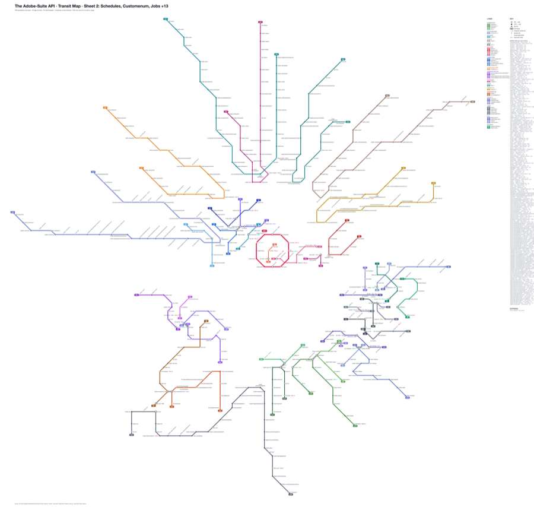
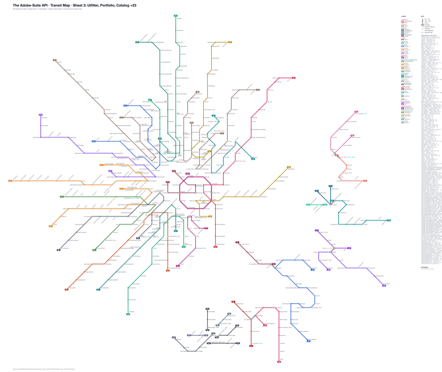
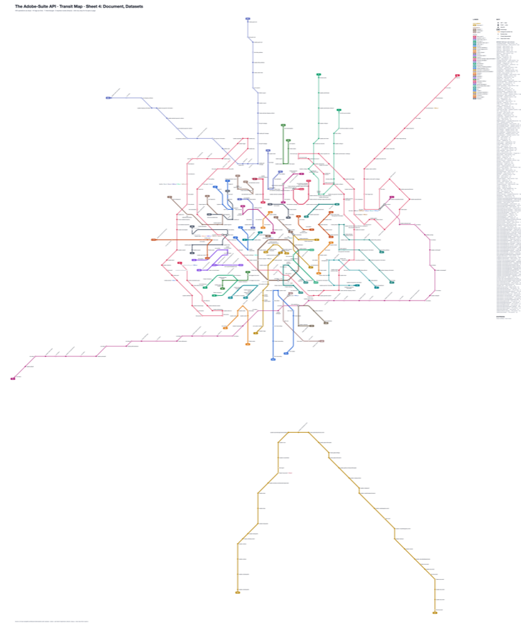
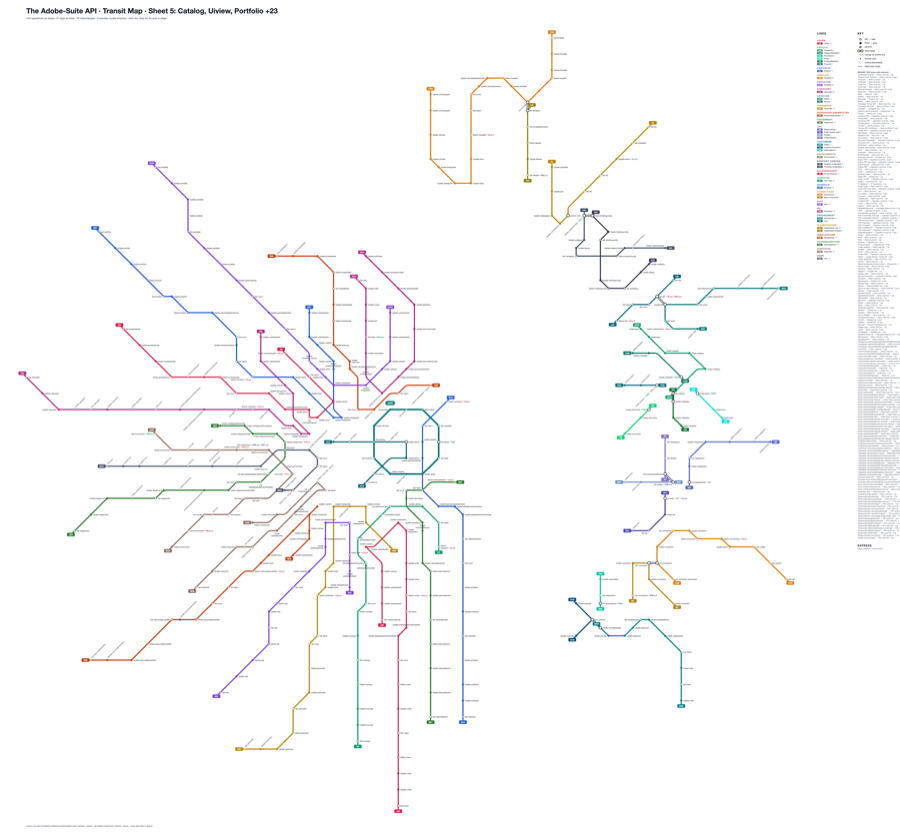

p.1 Properties, Program, Messages +4
448 operations · 58 lines
- Properties
- Program
- Messages
- Exim
- Optask
- Tenant
- Componentmetadata
Interchanges to p.2 (13), p.3 (10), p.4 (8), p.5 (8), p.6 (4)
2738 operations on 7 sheets · products that interchange most share a sheet · on each sheet, "⇄CODE p.N" means change for that line on page N · every stop links to apis.io
448 operations · 58 lines
Interchanges to p.2 (13), p.3 (10), p.4 (8), p.5 (8), p.6 (4)

448 operations · 43 lines

448 operations · 38 lines
Interchanges to p.1 (10), p.2 (2), p.4 (4), p.5 (22), p.6 (2)

446 operations · 44 lines
Interchanges to p.1 (8), p.2 (11), p.3 (4), p.5 (2), p.6 (1)

444 operations · 40 lines
Interchanges to p.1 (8), p.2 (8), p.3 (22), p.4 (2), p.6 (56), p.7 (5)

441 operations · 56 lines

63 operations · 5 lines
Interchanges to p.5 (5)